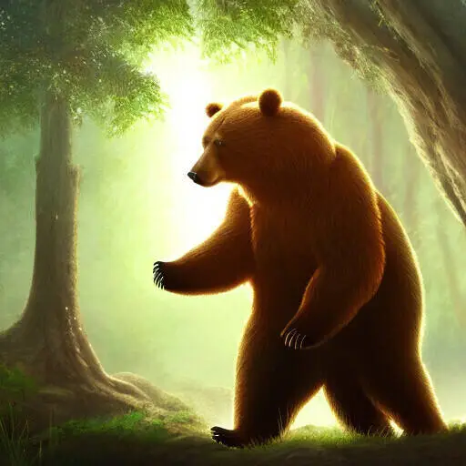

Fertigkeiten
Tiere
Jedes Gspänli hat die Karte mit den Fertigkeiten die zu seinem Tier passen.
Bär
- Riechen: Du nutzt deinen Geruchssinn. Etwas zu Essen finden. Ein anderes Tier finden.
- Schwimmen: Du bewegst dich auch im Wasser sehr gewandt.
- Tatze: Du setzt nutzt deine Bärentatze. Etwas schweres zu bewegen. Dich hochzuziehen.
Ente

- Fliegen: Du nutzt deine Federn zum Fliegen.
- Gründeln: Du bist am Grundeln in einem Gewässer, dort kannst du Essen finden oder einen hilfreichen Gegenstand.
- Kälteschutz: Deine Federn dienen zum Schutz vor Kälte. Auch deinen Füssen kann Kälte nichts anhaben.
Eule

- Tarnung: Dein Gefieder bietet dir eine ausgezeichnete Tarnung in deinem Lebensraum. Du kannst damit auch geräuschlos fliegen.
- Rundumsicht: Dein Kopf kann fast vollständig gedreht werden, sodass du alles rund um dich herum sehen kannst.
- Ohren: Du hörst auch eine Maus unter dem Schnee.
Frosch

- Unterwasser: Du kannst sowohl an Land als auch unter Wasser atmen.
- Kleben: Du kannst damit weit entferne Gegenstände zu dir holen.
- Musizieren: Du nutzt dein quaken zum musizieren und kannst auch andere damit erfreuen.
Fuchs

- Nachtsehen: Du siehst in der Nacht aussergewöhnlich gut.
- Orientieren: Du spürst Magnetfelder und kannst dich damit gut orientieren.
- Nachmachen: Du kannst die Geräusche machen und auch solche von anderen Tieren nachahmen.
Hase

- Aufmerksamkeit: Du kannst selbst ein bisschen ausruhen auch wenn du noch wach bist.
- Rundumsicht: Du kannst mit deinen Augen alles rund um dich herum entdecken.
- Hoppeln: Du kannst viele aufeinanderfolgende Sprünge machen und so auch ziemlich hoch und weit kommen.
Luchs

- Hören: Du hörst sehr genau was rund um dich und auch weiter weg passiert.
- Springen: Du hast eine starke Sprungkraft und kannst weite Distanzen überwinden.
- Schleichen: Mit deinen grossen flauschigen Pfoten kannst du leise schleichen.
Schildkröte

- Erinnern: Du weisst ganz vieles. Du hast irgendwann schon einmal davon gelesen.
- Schützen: Du verwendest deinen Panzer als Schutz. Du kannst dich und andere gegen Gefahren schützen.
- Tauchen: Du kannst unter Wasser etwas machen (max. 1 Stunde) oder sogar unter Wasser schlafen (max. 6 Stunden).
Wolf

- Heulen: In der Nacht kannst du heulen. Vielleicht hören dich andere Tiere.
- Mitgefühl: Du kannst es ganz gut mit anderen zusammen. Wenn du anderen hilfst, gelingt dir besonders gut.
- Ausdauer: Du hast eine grosse Ausdauer und kannst lange Strecken ohne Ermüdung laufen.
Waschbär
- Werkzeug-Pfoten: Du kannst mit deinen Pfoten auch komplizierte Sachen öffnen.
- Maske: Du bist gut darin dich zu verkleiden.
- Klettern: Du kannst schnell Bäume rauf unter runter klettern.
Bewachende
Wenn du dich entscheidest eine Bewachendes Gspänli zu sein, dann bedeutet dass das du dass, dass du dich in Zukunft für etwas stark machst und dich dafür einsetzt. Bist du z.B. ein Baum-Bewachendes Gspänli, verpflichtest du dich für Bäume da zu sein. Wenn deine anderen Gspänli nach einer Spielrunden zusammen entscheiden dass du deiner Rolle nicht gerecht wirst, kann es auch passieren dass du deine Fertigkeit wieder verlierst.
Wasser-Bewachende
- Wolke: Wenn du eine Wolke am Himmel siehst, kannst du mit ihr ins Gespräch kommen.
- Wasser Formen: Du kannst auch grössere Wassermassen von einem zum anderen Orte bewegen und dabei das Wasser in verschiedenste Formen bringen.
- Wasser Reinigen: Du kannst Schmutz aus Wasser entfernen. Es kann danach ohne Probleme getrunken werden aber auch zum waschen verwendet werden.
Baum-Bewachende
- Wachsen: Du kannst Bäume aber auch andere Lebewesen wachsen lassen.
- Formen: Die Äste der Bäume in deiner Umgebung kannst du nach deiner Vorstellung Formen.
- Früchtereste: Bäume geben dir auch im Winter noch Reste von ihren Früchten. Bucheckern, Eicheln, Lindenblüten, Walnüsse, Haselnüsse, ...
Stein-Bewachende
- Stapeln: Du kannst Steine zu hohen Türmen stapeln.
- Schleifen & Mahlen: Du kannst Steine dazu verwenden um andere Dinge zu mahlen oder zu schleifen.
- Beruhigend: Du legst dir oder einem deiner Gspänli einen rundlichen, warmen Stein in die Pfote.
Luft-Bewachende

- Schweben: Du kannst dich, aber auch Freunde in die Luft heben.
- Wind: Du kannst dem Wind eine Frage stellen.
- Gerüche: Du kannst Gerüche von weit her erkennen.
Blumen-Bewachende
- Wachsen: Du kannst Blumen und andere Lebewesen wachsen lassen.
- Duft: Du kannst mit beliebigen Düften anderen eine Freude bereiten.
- Nektar: Kann Nahrung für andere Tiere sein, aber auch du kannst daraus z.B. Sirup für deine Gspänli machen.
Wetter-Bewachende
- Wolken Gespräch: Falls eine Wolke am Himmel ist kannst du mit ihr reden.
- Sonnen Strahlen: Die Sonne kann dir helfen ihre Strahlen dorthin zu lenken wo du gerne möchtest.
- Schnee: Eignet sich wunderbar für eine Rutschbahn.
Gegenstände
Um den Gegenstand zu Nutzen, musst du ihn berühren können.
Zelt
- Schutz: Schutz vor allen möglichen Naturgewalten.
- Verpflegung: Essen und Tränke zubereiten.
- Ruhen: Die ganze Gruppe nimmt kurz Ruhe und kann etwas Ausdauer regenerieren.
Leiter

- Himmel: Du kannst mit der Leiter in ungeahnte Höhen hoch klettern.
- Überqueren: Du kannst die Leiter verwenden um Schluchten zu überwinden.
- Helfen: Deine Leiter ist oft hilfreich um anderen Lebewesen zu helfen.
Becher

- Trink-Wasser: Du kannst deinen Durst mit einem Becher voll Wasser löschen.
- Würfel: Mit den Würfeln in deinem Becher kannst du mit anderen Spiele spielen.
- Heilen: Du kannst Verletzungen oder Krankheiten von Lebewesen lindern.
Amphore

- Wirkliches Bedürfnis: Wenn du oder ein anderes Lebewesen in die Amphore schaust erkennst du was dir wirklich wichtig ist.
- Portal: Du und deine Freunde können in andere Welten gehen.
- Beeren: In deinem Krug hat es genügend Beeren für eine Mahlzeit für ein Gspänli.
Bienen Glocke
- Schwarmintelligenz: Du brauchst etwas Hilfe? Ein Schwarm von Bienen wird dich suchen und dir helfen.
- Honig: Wenn keine Ausdauer mehr hast und eine kleine Stärkung benötigst helfen dir Bienen diese zu finden. Nimm aber nicht alles, auch die Bienen sind auf ihren Honig angewiesen.
- Jahreszeitenwechsel: Kann kurzzeitig die Jahreszeit verändern.
Chamäleon Umhang

- Stimmung: Dein Mantel kann die Stimmung von dir nahestenden Lebewesen zeigen.
- Tarnung: Du kannst dich der Umgebung anpassen, so dass du nur schwer zu entdecken bist.
- Mimikry: Du sieht wie ein anderes Lebewesen aus.
Fussabdruck Stein
- Spuren-Erinnerung: Kann dir Pfaden zeigen die andere Lebewesen früher verwendet haben.
- Wanderwege: Zeigt dir unsichtbare Pfade an.
- Abdruck: Kann anhand eines Abdruckes erkennen zu welchem Lebewesen er gehört. Oder kann Abdrücke im Boden von anderen Lebewesen machen.
Kinder Beutel
- Schlummern: Ein kleines Lebewesen das im Beutel ist beruhigt sich sofort und beginnt einen ruhigen Schlaf.
- Spielzeug: Kann aus Pflanzen Spielzeug formen.
- Kichern: Kann das kichern von anderen Lebewesen nachahmen und das so lustig dass meistens alle lachen müssen.
Kolibri Amulet
- Flügel: Erlaubt es kurzzeitig in alle Richtungen zu fliegen.
- Verformen: Kann sich in beliebige kleine oder auch lange Formen verwandeln. Ist damit an Werkzeug um an kleine Gegenstände zu gelangen.
- Verlangsamen: Für eine kurze Zeit vergeht die Zeit für dich viel langsamer.
Lebendigkeits-Umhang
- Pulsieren: Wo immer du den Mantel hinlegst sieht wie das Leben pulsiert.
- Tanzen: Sobald irgend Musik ertönst, kannst du dazu mit deinem Tanz andere verzaubern.
- Muntermacher: Wenn du den Mantel einem Lebewesen umlegst dass etwas Müde ist, dann fühlt es wie die Energie zurückkehrt.
Samen Tasche

- Samenvorrat: Kann Samen von unterschiedlichsten Blumen aufbewahren. Werden die Samen in einer ihr günstigen Jahreszeit gestreut dann beginnen sie fast unmittelbar zu wachsen.
- Pusteblume:Hast du einen Löwenzahn gefunden der am verblühen ist kann sein Schirmchen riesig werden und dich und deine Freunde davon tragen.
- Gedanken Samen: Du kannst einen Gedanken an ein anderes Lebewesen weitergeben das lange darüber nachdenken wird.
Marienkäfer Umhang

- Glück: Bringt dem Träger oder einem anderen Wesen Glück.
- Panzer: Der Umhang schützt dich.
- Fallschirm: Wenn du fällst und den Mantel ausbreitest, fällst du langsam wie ein Blatt herunter.
Mondstaub
- Träumen: Wer den Staub einatmet kann sich nur schwer gegen seine Schläfrigkeit wehren und fällt in einen tiefen Traum bis ihm etwas passiert oder zum nächsten morgen.
- Leuchten: Wo den den Sand hinstreust beginnt es zu leuchten.
- Silber: Wenn der Sand beleuchtet wird, verwandelt er sich in Silber.
Muschel
- Gezeiten: Kein Ebbe und Flut beeinflussen.
- Perle: Beinhaltet manchmal etwas wunderhübsches.
- Meeres Flüstern: Kann in der Nähe eines Gewässern verstehen was das Wasser flüstert.
Nuss Behälter

- Winter Vorrat: Hat Platz für beliebig viele Nüsse.
- Nuss Knacker: Kann Dinge öffnen für die es viel Kraft benötigt.
- Lebensweg: Eine Nuss die aus dem Behälter ziehst hat einen persönlichen Hinweis für dich.
Obsidian Zwitscherstein
- Flissendes Glas: Gibt eine spezielle Melodie aus, so dass Glas beginnt zu fliessen und verformt werden kann.
- Imitieren: Kann das zwitschern von Vögeln nachahmen.
- Zittern: Wenn du ihn berührst, beginnt er zu zittern wenn etwas gefährliches in der Nähe ist.
Rinden Pfeife
- Bass: Gibt einen tiefen langen Ton aus der von weit her gehört werden kann.
- Harz: Gibt langsam Harz ab, das für alles mögliche verwendet werden kann z.B. zum Leimen, als Verband.
- Baum Seele: Hilft dir dabei die schlafenden Seelen von Bäumen zu wecken und mit Ihnen zu sprechen.
Schneeschritt Feder
- Lautlos: Es gibt beim gehen keine Geräusche.
- Spurlos: Beim gehen werden keine Spuren hinterlassen, auch nicht im Schnee.
- Daune: Gibt Wärme, auch im kältesten Winter.
Schnurr Perle
- Schnurren: Beginnt wohlig zu schnurren und vibrieren wenn du die Perle streichelst.
- 9 Leben: Hilft einem verletzen Lebewesen sich schneller zu erholen.
- Kehr Zurück: Wo auch immer du die Perl hinrollst, sie findet immer irgend einen Weg zu dir zurück.
Spinnenweben Handschuhe
- Netz: Es braucht seine Zeit, aber du kannst beliebige Netze damit formen. Die Netze sind dehnbar und eigenen sich z.B. wunderbar als Trampolin.
- Verbinden: Du kannst mit einzelnen Fäden Dinge miteinander verbinden.
- Morgentau: Wenn du durstig bist, kannst du damit Morgentau aus der Luft sammeln.
Uhu Anhänger

- Weisheit: Gibt einem Einsicht, wenn Du etwas kompliziertes vor dir hast, dass du noch nicht so ganz verstehst.
- Gehör: Du kannst auch die leisesten Geräusch noch wahrnehmen.
- Herzensfeder: Zum Uhu Anhänge gehört eine kleine Feder dazu. Wem auch immer du diese gibst, du spürst wie diesem Wesen geht.
Wasser Schuppen

- Seifenblasen: Sobald du etwas Wasser hast, kannst du draus kleine, grosse und auch riesige Seifenblasen machen.
- Wasserabweisend: Die Schuppen sind wasserabweisend wo auch immer du sie verwendest.
- Schwimmen: Gehst du ins Wasser wird dein Körper leicht schuppig und damit kannst du viel schneller durchs Wasser schiwmmen.
Wind Fusskettchen
- Schweben: Trägt Du die Fusskettchen, schwebst du leicht über dem Boden, was das wandern über Berg und Stein vereinfacht.
- Wind Flüstern: Wer es trägt kann dem Wind zuhören.
- Aufräumen: Was auch immer du aufräumst oder putzt, es scheint als helfe dir der Wind.
Zauber
Ein Zauber ist immer an ein Gegenstand gebunden. Dass kann ein Zauberstab, ein Amulett, ein Ring und vieles mehr sein. Das ist eine Entscheidung.
Ewiges Licht

- Farbe: Du kannst einen Raum mit einer beliegen Farbe zum leuchten bringen. Er leuchtet auch noch einen ganz Tag weiter, nachdem du nicht mehr dort bist.
- Licht: Wenn andere euch suchen, werden sie euer Licht sehen und können euch finden.
- Wachsen: Das Licht hilft Pflanzen und vielleicht auch anderen Dingen schneller zu wachsen als normal.